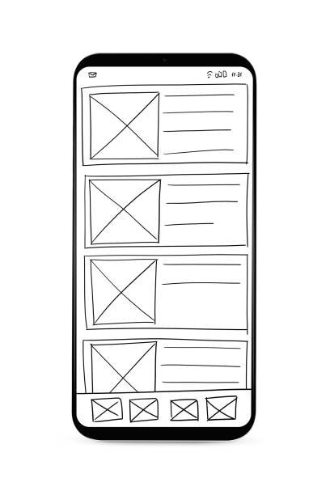
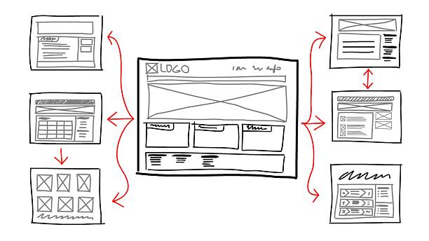

Temple Album
Temple Album — This name reflects a digital collection and showcase of temples around the world. It's easy to remember, descriptive, and well-suited for a photo gallery site.
Site Purpose
The purpose of Temple Album is to provide information and a visual catalog of temples worldwide, including images, historical data, and interactive features such as filtering by region, era, or size.
Scenarios
- Which temples were built before 1900?
- Where can I find images and details about the largest temples?
Color Schema
- Accent Blue (#314e52) — Used for headings, navigation, and footer.
- Background Light (#f6f9f8) — Used for the main page background.
Typography
- Montserrat — Used for headings and the logo.
- Roboto — Used for body text and paragraphs.
Wireframe
Mobile View
Desktop View
Wireframes show navigation at the top, a hero heading, temple card grid, and a footer. Mobile view stacks sections vertically; desktop view uses a three-column grid for cards.